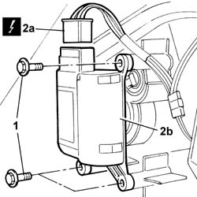

5040D95 Air conditioning upper left air distribution flap control motor (DEFROST) - R.R. with dashboard removed
- Path
- Procedures > 50 auxiliary units > 5040 AIR CONDITIONING CASING AND COMPONENTS > 5040D air conditioner controls > 5040D95 Air conditioning upper left air distribution flap control motor (DEFROST) - R.R. with dashboard removed
- Kind
- repair procedure (removal / refitting; the operation number is the code)
- Applies to
- all engines; all production periods
- Interactive page
- https://sloeber94.github.io/elrnDB-lThss/en/#/157302
Applies to: all engines; all production periods
 Removing
Removing
 Refitting
Refitting1. Undo the fixing bolts (1).
2. Disconnect the electrical connector (2a) and remove the motor (2b).
 | Description | Connector |
|---|---|---|
2a | Left defrost air distribution actuator | N111 |

Applies to: all engines; all production periods
Refitting
Removing- Place the motor in position and connect the electrical connector.
| Description | Connector |
|---|---|---|
. | Left defrost air distribution actuator | N111 |
- Tighten the bolts fixing the electric motor.